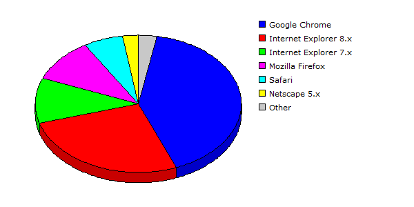

| Rank |
Browser |
Hits |
Visitors |
| 1 |
Google Chrome |
51413 |
27.73% |
3894 |
41.02% |
| 2 |
Internet Explorer 8.x |
84564 |
45.60% |
2514 |
26.49% |
| 3 |
Internet Explorer 7.x |
21294 |
11.48% |
1021 |
10.76% |
| 4 |
Mozilla Firefox |
12713 |
06.86% |
959 |
10.10% |
| 5 |
Safari |
8731 |
04.71% |
584 |
06.15% |
| 6 |
Netscape 5.x |
5926 |
03.20% |
242 |
02.55% |
| 7 |
Mozilla |
540 |
00.29% |
220 |
02.32% |
| 8 |
Opera |
215 |
00.12% |
47 |
00.50% |
| 9 |
Netscape 4.x |
13 |
00.01% |
5 |
00.05% |
| 10 |
Internet Explorer 5.x |
24 |
00.01% |
3 |
00.03% |
| 11 |
Internet Explorer 6.x |
5 |
00.00% |
3 |
00.03% |
| |
Total |
185438 |
9492 |
|
Description: This report contains statistics about the browsers that your visitors use.
|
|